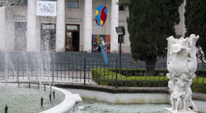

Ese mismo año fue designado Rector interventor el profesor Vicente Fatone. Las clases en la flamante institución comenzaron a dictarse el 1 de abril de ese año. La UNS fue la séptima universidad nacional creada en el país, siendo precedida por las de Córdoba (1613), Buenos Aires (1821), La Plata (1890), Tucumán (1912), Litoral (1919) y Cuyo (1939).
La nueva casa organizó su estructura académica por Departamentos, en lugar de las tradicionales Facultades.
Estos tienen una estructura administrativa menor y permiten la flexibilidad y transversalidad en el conocimiento.
Así, las unidades académicas no deben crear para sus carreras las materias que otras dictan para las suyas, lo que permite a los alumnos cursarlas en ellos. Los primeros Departamentos fueron Contabilidad, Economía, Física, Geología y Geografía, Matemática, Ingeniería, Humanidades y Química.
Apenas a un mes de la inauguración, dos estudiantes que habían comenzado a cursar sus carreras en el Instituto, Jorge Laurent y David Tomás Prieto, se presentaron a rendir las últimas materias, convirtiéndose así en los primeros egresados de la institución. La primera mujer que obtuvo su título en la UNS fue Betty Kerlleñevich, de Bahía Blanca, una de las alumnas fundadoras del ITS, quien también se graduó de ingeniera.